Inicio
Horarios
Quienes Somos
Contacto
Tarifas
Bienvenido a Fitness 2000
Los límites están en la mente. ¡Rompe barreras y desafía tus límites en el gimnasio!
Aumentar texto
Aumentar texto
Disminuir texto
Invertir colores
Escala de grises
Escala de grises
Resetear cambios
Cerrar
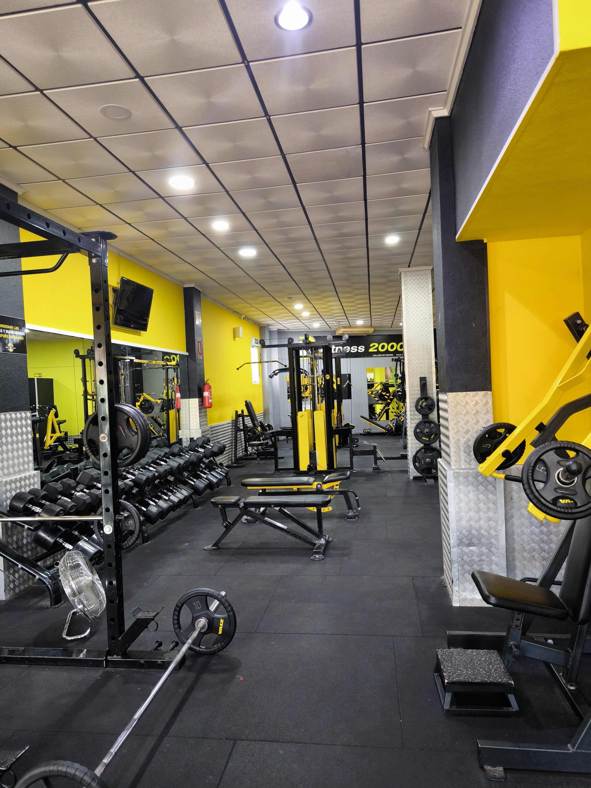 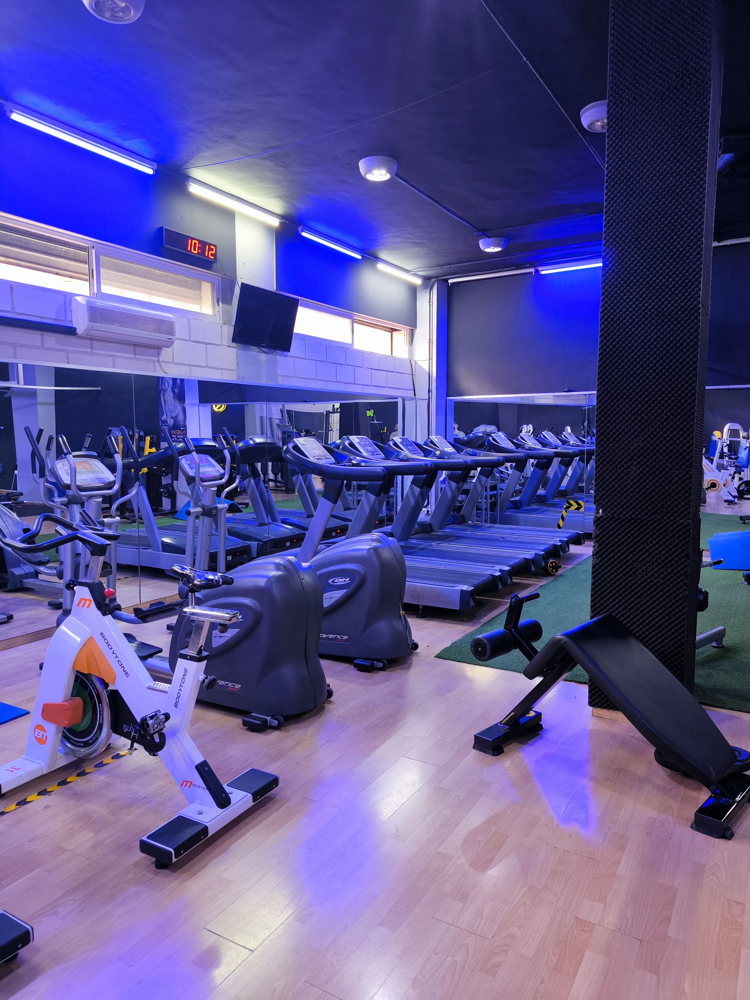 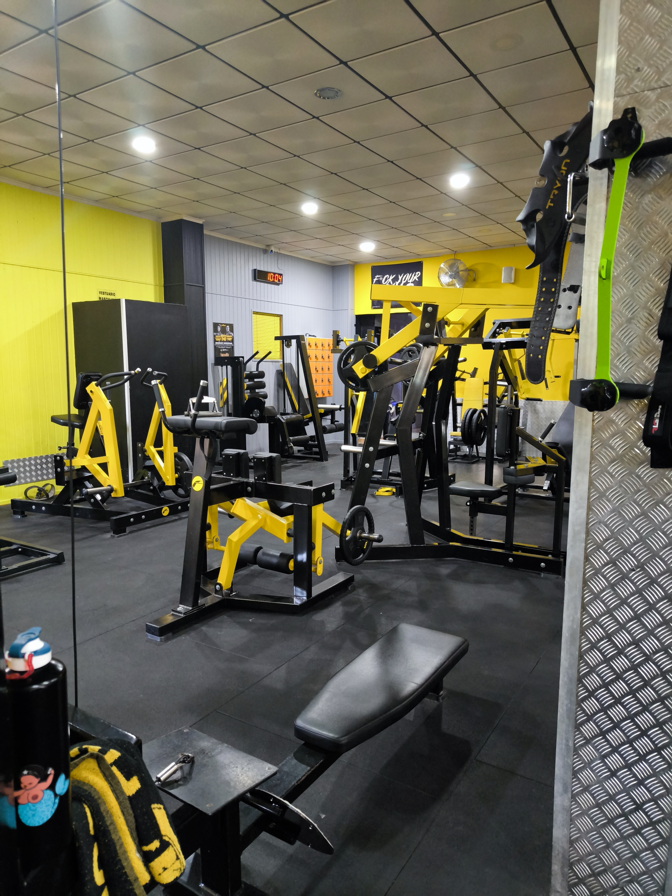 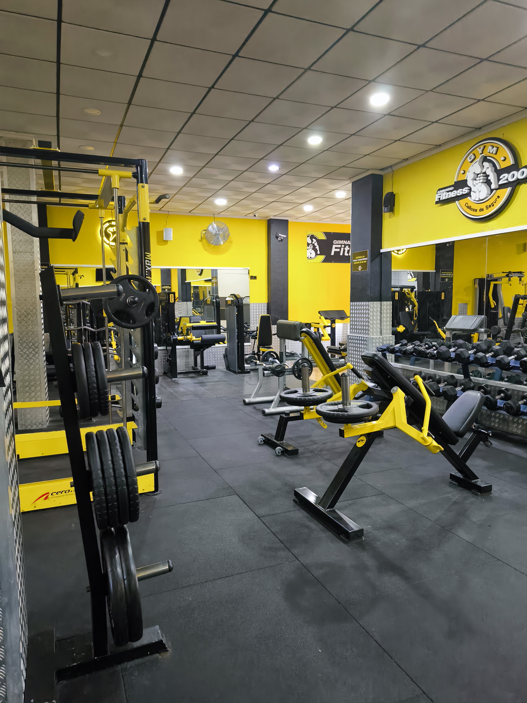
 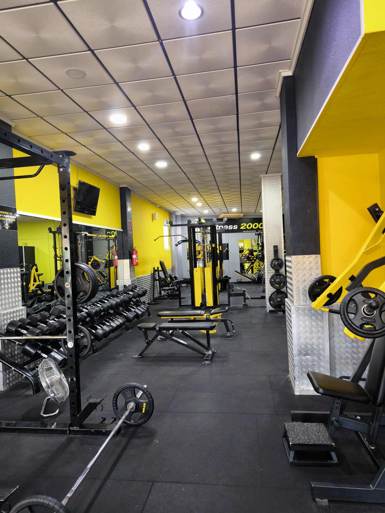
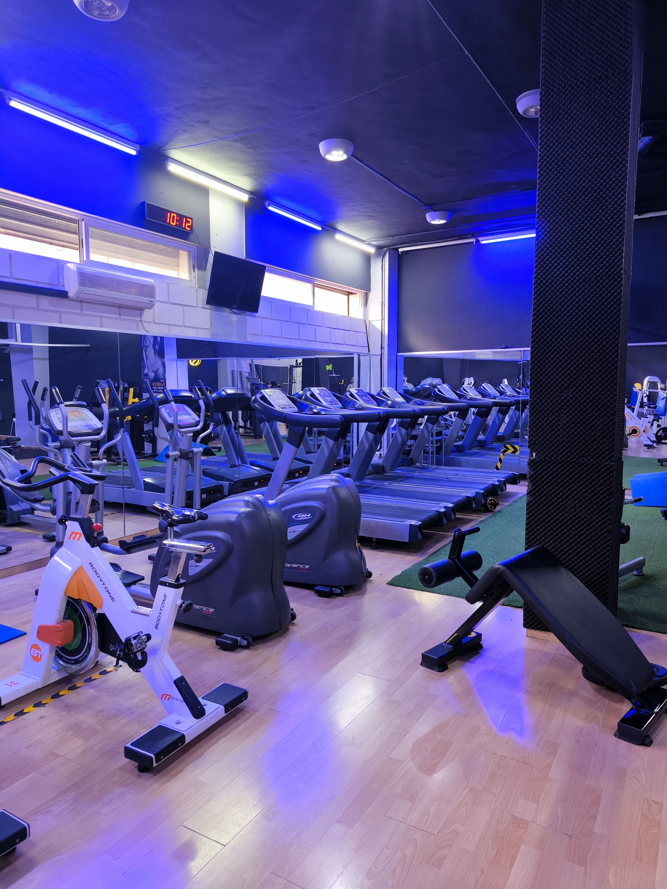
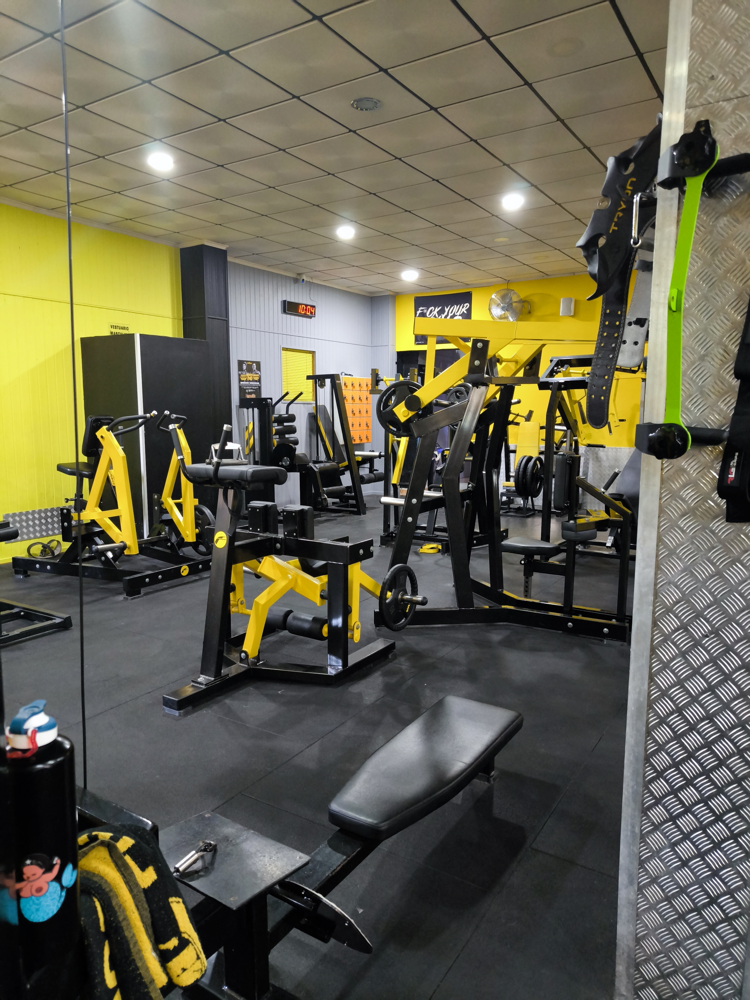
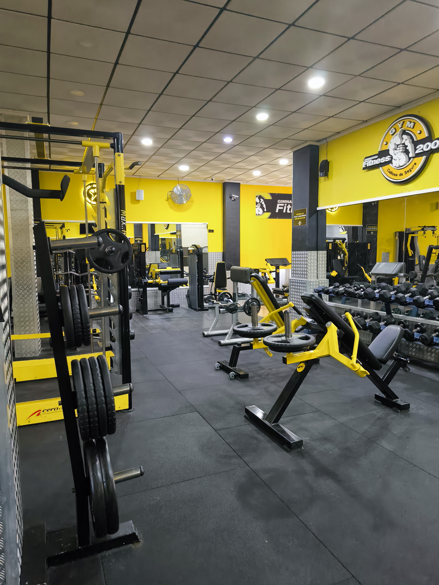
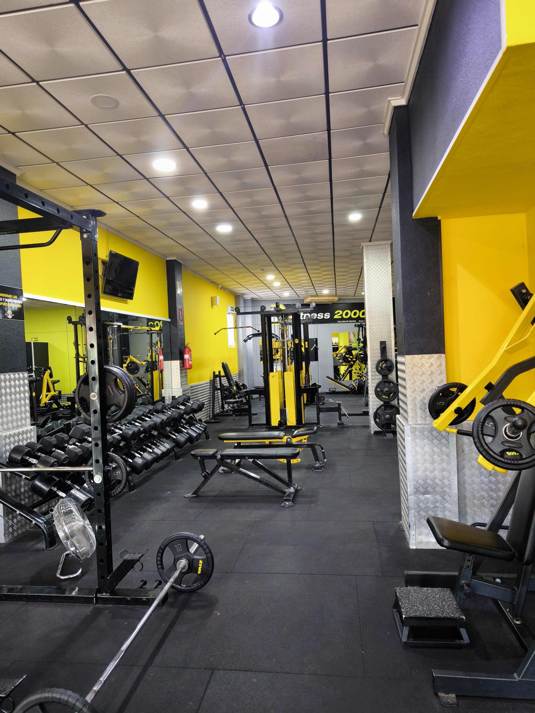
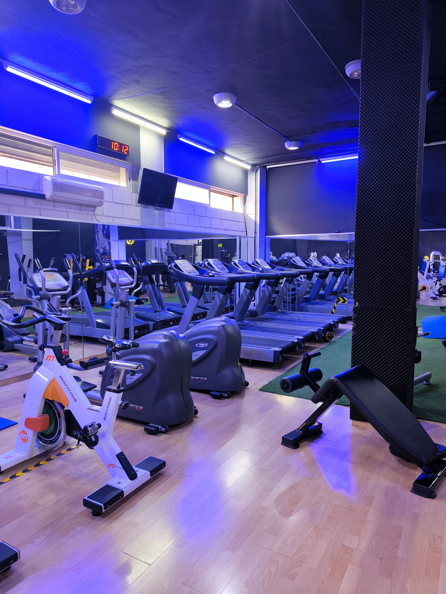
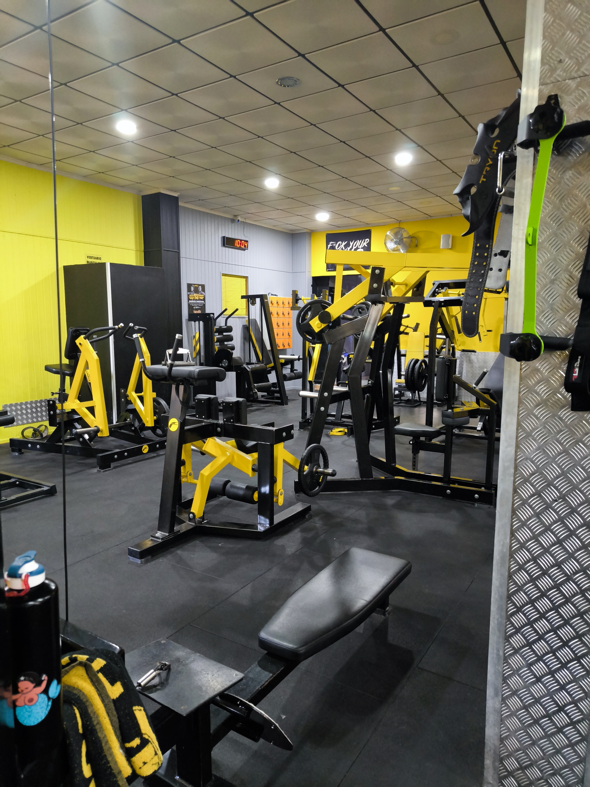
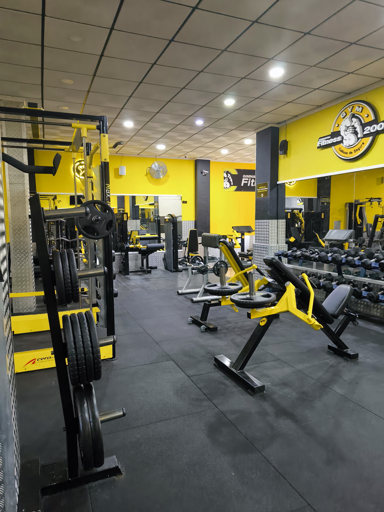